About Me
Hello and welcome! I am currently a third-year Ph.D. student in Electrical and Computer Engineering at Purdue University, advised by Prof. Christopher G. Brinton. My research focuses on LLM post-training and multi-agent LLM systems.
Previously, I obtained my M.S. in Electrical and Computer Engineering at ShanghaiTech University under the supervision of Prof. Yong Zhou and Prof. Yuanming Shi. From Aug. 2022 to Feb. 2023, I was a research intern in the Optimization for Machine Learning lab at KAUST led by Prof. Peter Richtárik.
- RL-based Post-Training — developing reinforcement learning frameworks for small–large LLM collaboration and multi-agent collaboration.
- Efficient On-device LLM Fine-tuning — enabling distributed on-device LLM fine-tuning under computation, communication, and memory constraints.
- Federated Learning & Optimization — designing efficient and convergent algorithms for distributed model training.
- Sep 2026 Two papers accepted to NeurIPS 2026: Iterative Critique-and-Routing Controller for Multi-Agent Systems with Heterogeneous LLMs and PAAC: Privacy-Aware Agentic Device-Cloud Collaboration.
- Jun 2026 Joined the AI Center at Samsung Research America (SRA) as an NLP/ML Research Intern, working on LLM reasoning and multi-agent systems.
- Apr 2026 Two papers accepted to ICML 2026: Bridging On-Device and Cloud LLMs for Collaborative Reasoning and Federated Sketching LoRA.
Show more
- Sep 2024 Our paper Hierarchical Federated Learning with Multi-Timescale Gradient Correction was accepted to NeurIPS 2024.
- Aug 2023 Joined Purdue as a Ph.D. student after completing my M.S. at ShanghaiTech.
* indicates equal contribution
Selected First-Author Publications (full list)
|
NeurIPS2026
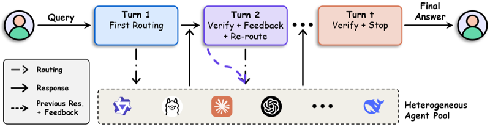 |
Wenzhi Fang, Liangqi Yuan, Guangchen Lan, Dong-Jun Han, Christopher G. Brinton Advances in Neural Information Processing Systems (NeurIPS), 2026 |
|
Preprint2026
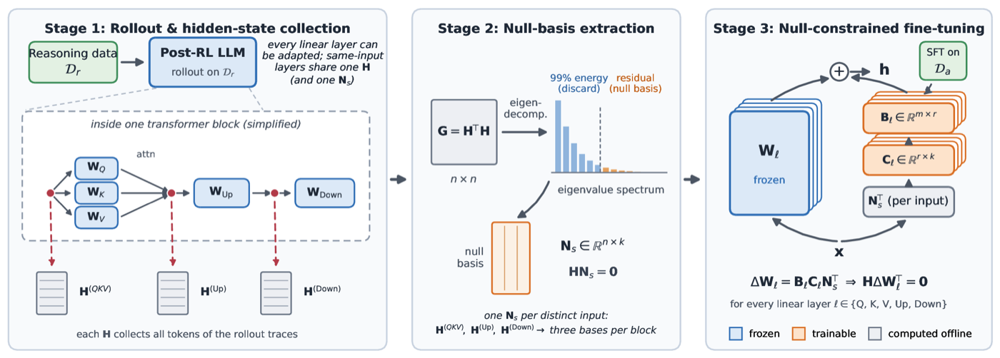 |
Wenzhi Fang, Nicholas Tzou, Lazar Valkov, Srinivas Chappidi arXiv preprint, 2026 |
|
ICML2026
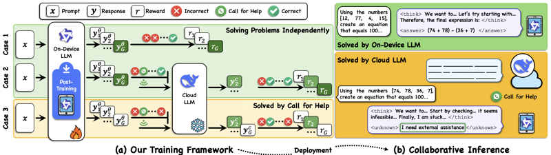 |
Wenzhi Fang, Dong-Jun Han, Liangqi Yuan, Evan Chen, Christopher G. Brinton International Conference on Machine Learning (ICML), 2026 |
|
ICML2026
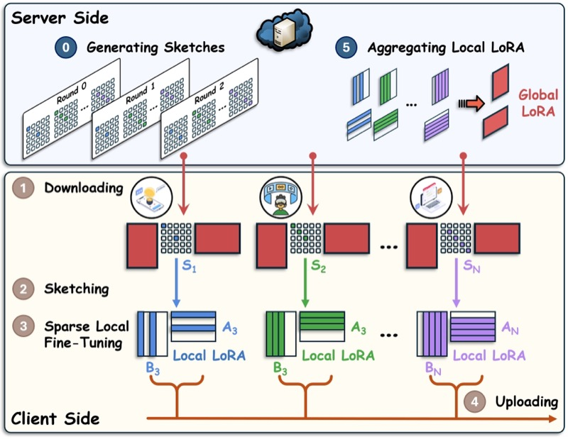 |
Wenzhi Fang, Dong-Jun Han, Liangqi Yuan, Seyyedali Hosseinalipour, Christopher G. Brinton International Conference on Machine Learning (ICML), 2026 |
|
Preprint2026
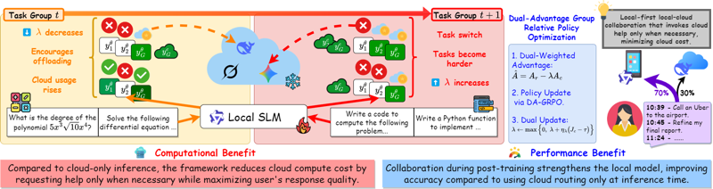 |
Evan Chen*, Wenzhi Fang*, Shiqiang Wang, Christopher G. Brinton arXiv preprint, 2026 |
|
NeurIPS2024
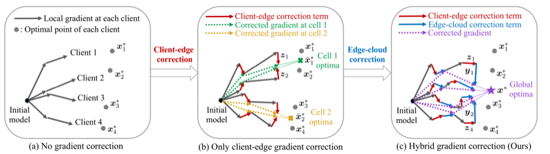 |
Wenzhi Fang, Dong-Jun Han, Evan Chen, Shiqiang Wang, Christopher G. Brinton Advances in Neural Information Processing Systems (NeurIPS), 2024 |
|
ToN2025
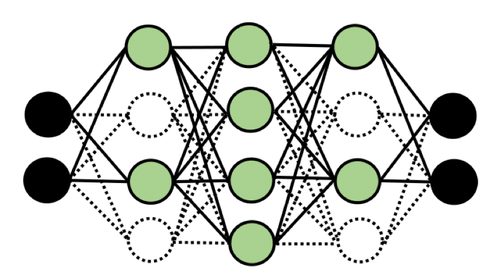 |
Wenzhi Fang, Dong-Jun Han, Christopher G. Brinton IEEE/ACM Transactions on Networking, 2025 |
|
TSP2022
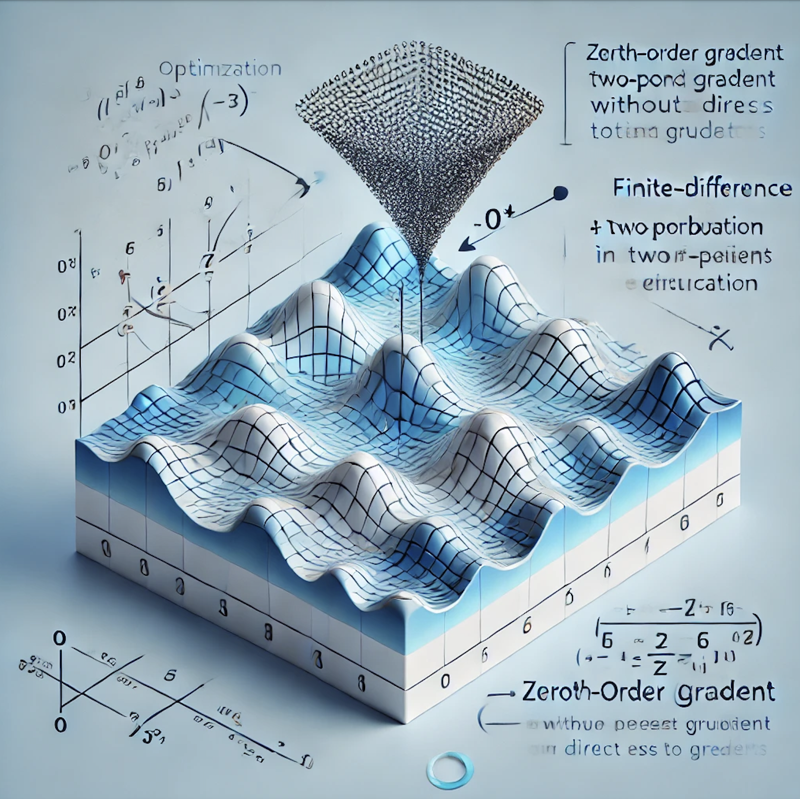 |
Wenzhi Fang, Ziyi Yu, Yuning Jiang, Yuanming Shi, Colin N. Jones, Yong Zhou IEEE Transactions on Signal Processing, 2022 |
Selected Collaborative Publications (full list)
|
NeurIPS2026
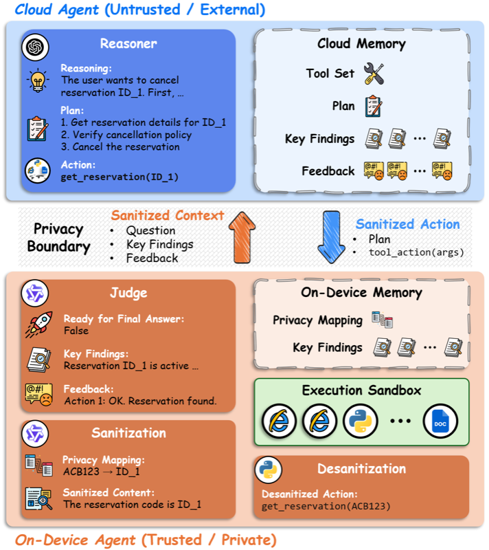 |
Liangqi Yuan, Wenzhi Fang, Shiqiang Wang, Christopher G. Brinton Advances in Neural Information Processing Systems (NeurIPS), 2026 |
|
Preprint2025
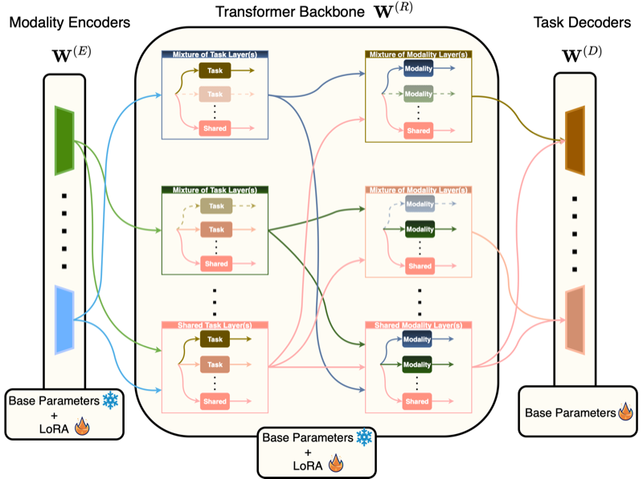 |
Seohyun Lee, Wenzhi Fang, Dong-Jun Han, Seyyedali Hosseinalipour, Christopher G. Brinton arXiv preprint, 2025 |
|
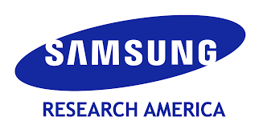 |
Samsung Research America Summer 2026 NLP/ML Research Intern @ AI Center |
|
King Abdullah University of Science and Technology (KAUST) Aug 2022 – Feb 2023 Research Intern @ Optimization for Machine Learning Lab |